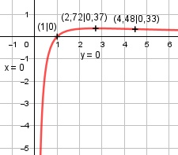

Aufgabe 168 ln x f(x) = ------ = ln x * x-1 x ≠ 0 x Produktregel erste Ableitung: 1 u = ln x, u' = --- x v = x-1, v' = - x-2 1 f'(x) = --- * x-1 + - x-2 * ln x x f'(x) = x-2 - x-2 * ln x = x-2 * (1 - ln x) Produktregel zweite Ableitung: u = x-2, u' = -2 * x-3 1 v = 1 - ln x, v' = - --- x 1 f''(x) = -2 * x-3 * (1 - ln x) + (- ---) * x-2 x f''(x) = - 2 * x-3 * (1 - ln x) - x-3 ln x - 3 f''(x) = x-3 * (ln x - 2 - 1) = ---------- x3 Zur Beurteilung, ob f'''(x) ≠ 0: (Begründung siehe Aufgabe 105) 1 u = ln x - 3, u' = --- x 1 --- u' x 1 f'''(x) = --- = ----- = ---- ≠ 0 für alle x ≠ 0 v x3 x4 x muss wegen ln x > 0 sein Definitionsbereich: 0 < x < ∞ Polstelle x = 0 Waagerechte Asymptote: ln x Für x --> ∞ geht f(x) = ------ gegen 0. x Wertebereich: f(x) wird dann am größten, wenn x = e = 2,72 (Extrempunkt) und f(e) = 0,37 --> -∞ < f(x) ≤ 0,37 Symmetrie zur y-Achse bzw. zum Punkt (0|0): ln (-x) ln (-x) f(-x) = --------- = -------- ≠ f(x) (-x) -x --> keine Achsensymmetrie ln (-x) -f(-x) = --------- ≠ f(x) x --> keine Punktsymmetrie Nullstellen: f(x) = 0 ln x ------ = 0 |* x x ln x = 0 x = e0 = 1 N(1|0) Schnittpunkt mit der y-Achse: x = 0 x = 0 liegt nicht im Definitionsbereich --> kein Schnittpunkt Extrempunkte: f'(x) = 0 x-2 * (1 - ln x) = 0 |:x-2 1 - ln x = 0 |+1 ln x = 1 x = e = 2,72 ln e f(2,72) = ------ = 0,37 2,72 2 * ln e - 3 f''(e) = ------------- < 0 e3 --> Hochpunkt (2,72|0,37) Wendepunkte: f''(x) = 0 2 * ln x - 3 -------------- = 0 |*x3 x3 2 * ln x - 3 = 0 |+3 2 * ln x = 3 | :2 ln x = 1,5 x = e1,5 = 4,48 ln e1,5 f(4,48) = --------- = 0,33 WP(4,48|0,33) 4,48 Graph:
